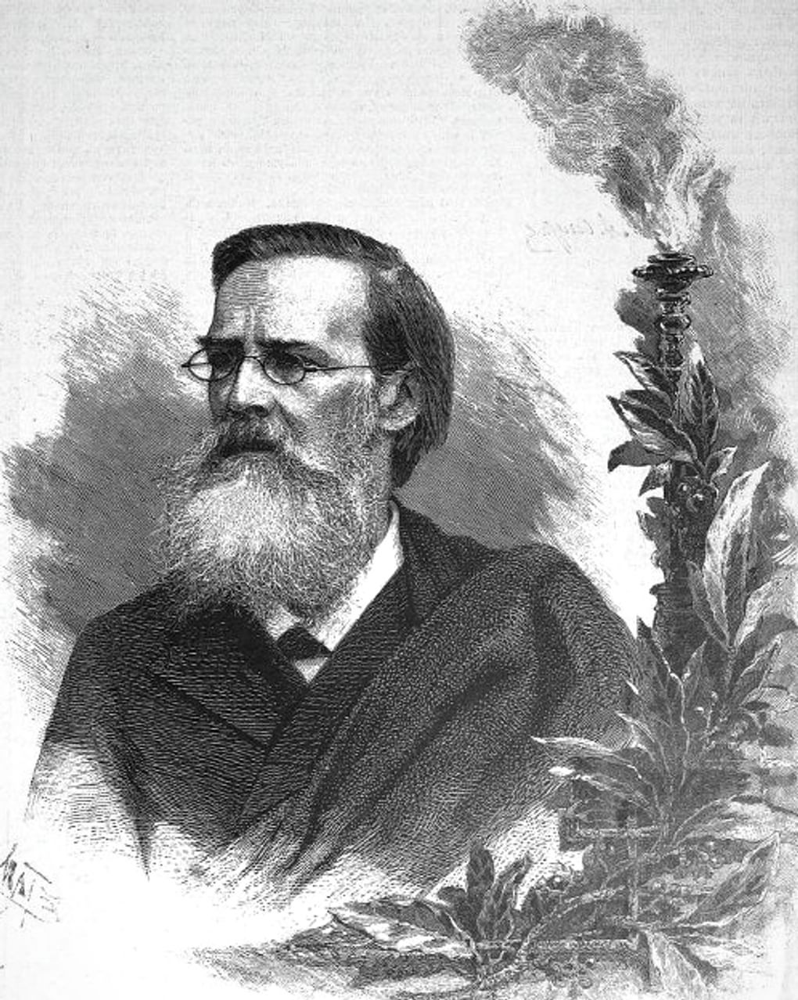
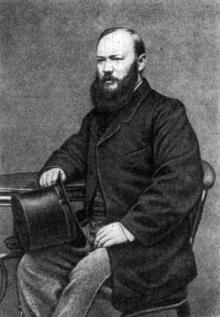
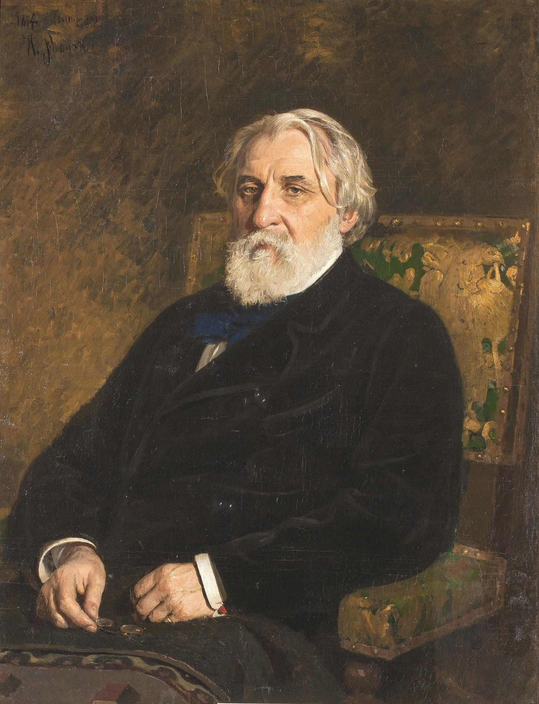
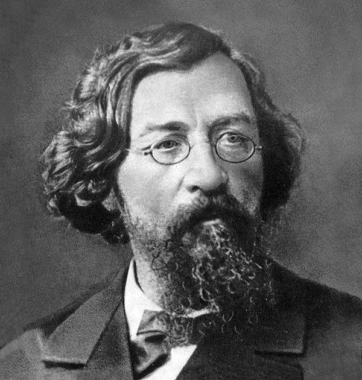

Апаллон Николаевич Майков
Аполлон Майков родился в дворянской семье. Любовь к искусству он унаследовал от родителей, представителей творческой интеллигенции. Отец, Николай Майков, был академиком живописи, мать, Евгения Майкова, — писательницей и поэтессой. «Дом Майковых кипел жизнью, людьми, приносившими сюда неистощимое содержание из сферы мысли, науки, искусств», — вспоминал писатель Иван Гончаров, дававший в семье уроки литературы и русского языка.
Выросший в такой обстановке, Аполлон Майков был уверен, что посвятит свою жизнь искусству. Он был одинаково одарен и в литературе, и в живописи, но решил сделать выбор в пользу поэзии по двум причинам: его юношеские стихи высоко оценили историк литературы Александр Никитенко и поэт Петр Плетнев, а развивающаяся близорукость мешала уделять живописи достаточно времени.
«Его стихи напоминают античных поэтов»
Поступив в 1837 году на юридический факультет Петербургского университета, Аполлон Майков начал изучать древнегреческую и римскую историю. Это увлечение повлияло на его творчество. Современники писали: «Он словно смотрит на жизнь глазами грека, его стихи напоминают античных поэтов, несут светлое и оптимистическое начало».
Первые произведения Майкова были опубликованы в конце 1830-х годов. В 1842 году вышел его первый стихотворный сборник. «Поэтический, полный жизни и определенности язык» — так прокомментировал книгу молодого поэта Виссарион Белинский. Восхищаясь произведением Майкова «Сон», критик писал: «У самого Пушкина это стихотворение было бы из лучших его антологических пьес».
За этот сборник Аполлон Майков удостоился пособия от императора Николая I. На полученные деньги он отправился в путешествие по Европе, которое длилось почти два года. Поэт побывал в Италии, Франции, Австрии и других странах.
Своими впечатлениями о поездке он поделился с читателями в новом сборнике — «Очерки Рима», вышедшем в 1847 году в Петербурге. Литературоведы отмечали, что его творчество переменилось: от античности он перешел к жизни современной, его стали больше занимать поэзия «мысли и чувства».
Кружок Петрашевского и натуральная школа
Вернувшись в 1844 году в столицу, Аполлон Майков стал заметной фигурой в литературных кругах Петербурга. Он активно сотрудничал с журналами «Современник» и «Отечественные записки», дружил с Виссарионом Белинским, Николаем Некрасовым и Иваном Тургеневым.
С помощью своего брата, Валериана, Аполлон попал и на заседание первого в России социалистического кружка, организованного Михаилом Петрашевским. Там у поэта завязалось тесное знакомство с Федором Достоевским и Алексеем Плещеевым. Хотя всех взглядов натуральной школы Майков не разделял, на его творчестве все-таки сказывается влияние этого литературного направления. Стихотворения 1840-х годов полны гражданских мотивов. Майков публикует свои стихи в журнале «Отечественные записки» Андрея Краевского, в 1845 году пишет поэму «Две судьбы», за которую он получил Пушкинскую премию Академии наук. В 1846 году в «Петербургском сборнике» Николая Некрасова вышла поэма «Машенька».
Когда многие участники кружка Петрашевского были сосланы, Майков изменил свое отношение к революционному движению в России. Позже в записках к поэту Якову Полонскому он говорил о своем «либеральном периоде»: «Много вздору, много эгоизма и мало любви. Это была моя глупость, но не подлость».
Славянофилы и «чистое искусство»
С 1850-х годов Аполлон Майков сблизился с редакцией «Москвитянин», и в его творчестве все больше ощущаются консервативные настроения. Майков разделял славянофильские идеи Михаила Погодина (издателя журнала), Михаила Каткова, Федора Тютчева. В этот период поэт выступал против влияния западноевропейской культуры. Он много писал о красоте русской природы. Эти стихотворения, по словам публициста Михаила Бородкина, «заучивались наизусть чуть ли не с первыми молитвами». Многие произведения Майкова были положены на музыку Николаем Римским-Корсаковым, Петром Чайковским и другими композиторами.
Немного позже поэт в своем творчестве начал склоняться в сторону «чистого искусства». Майков считал, что литература не должна выполнять особых социальных задач, она должна служить лишь для эстетического наслаждения.
Поэт увлекался историей Древней Руси и славянским фольклором. В 1866–1870 годах он переводил «Слово о полку Игореве». Исследователи древнерусской литературы признали его поэтический перевод одним из лучших.
В 1882 году Майков, действительный статский советник, стал председателем Комитета по иностранной цензуре. В этот период поэт почти не создавал новых произведений. В основном занимался правкой своих трудов и подготовкой собрания сочинений.
Умер Аполлон Майков в 1897 году в Петербурге, похоронен на кладбище при Воскресенском Новодевичьем монастыре.
Александр Николаевич Островский
Александра Островского называли основоположником национального театра. Он сочинил 47 пьес, защищал авторские права драматургов и разработал программу обучения для драматических классов. Критик Иван Гончаров говорил: «Литературе Вы принесли в дар целую библиотеку художественных произведений, для сцены создали свой особый мир. Вы один достроили здание, в основание которого положили краеугольные камни Фонвизин, Грибоедов, Гоголь».
«Разговоров о банкротстве наслушался бог весть сколько»: детство и юношество драматурга
Александр Островский родился в Москве, в купеческом районе Замоскворечье. Его отец, Николай Островский, окончил духовную академию, но выбрал светскую профессию и служил чиновником в суде. Мать, Любовь Островская, следила за хозяйством и воспитывала четверых детей. В 1826 году отец получил чин титулярного советника и прибавку к жалованью, и семья из небольшой квартиры переехала в дом. Помимо основной работы Николай Островский занимался частной адвокатской практикой. Друг будущего драматурга поэт Николай Берг писал: «В доме с утра до ночи толклись купцы, решая разные свои вопросы. Мальчик Островский видел там не одного банкрута, а целые десятки; а разговоров о банкротстве наслушался и бог весть сколько: не мудрено, что язык купцов стал некоторым образом его языком. Он усвоил его себе до тонкости. Иное, в особенности хлесткое и меткое, записывал (как сам мне признавался)».
Мать много времени уделяла образованию детей. Александр Островский занимался танцами и пением, учил французский и немецкий языки, а из домашней библиотеки отца часто брал книги Василия Тредиаковского, Василия Жуковского, Александра Пушкина. В 1831 году скончалась мать, и спустя пять лет отец женился во второй раз. Его супругой стала дочь шведского дворянина Эмили фон Тессин. Она продолжила обучать детей: рассказывала им историю европейского искусства и наняла учителя по греческому и итальянскому языкам.
В 1835 году Александр Островский поступил в Первую Московскую гимназию. Там он увлекся литературой и театральным искусством, в свободное время играл в драматическом кружке. Актер Федор Бурдин вспоминал: «Александр Николаевич был старше нас на три класса, и тогда уже он любил театр, часто посещал его; мы с великим удовольствием и интересом слушали его мастерские рассказы об игре Мочалова, Щепкина, Львовой-Синецкой». Островский мечтал о карьере писателя, однако отец считал, что это не прибыльно. В 1840 году будущий драматург поступил на юридический факультет Московского университета. Учился неважно: вместо лекций ходил на спектакли, несколько раз пересдавал экзамен по римскому праву. Весной 1843 года Островского отчислили. Существует также версия, что он оставил университет сам.
«Пьеса обидна для русского купечества»: первое известное произведение
В 1843 году отец устроил Островского в канцелярию Совестного суда, где в основном рассматривали семейные имущественные споры. Будущий драматург вел протоколы заседаний. Самые интересные дела он втайне переписывал в отдельную тетрадь, там же помечал поведение и внешность истцов и ответчиков. В 1845 году Островский перешел на ту же должность в Коммерческий суд и принимал жалобы от просителей.
Вечерами он пробовал сочинять и к 1847 году закончил свой первый очерк «Записки замоскворецкого жителя». В предисловии литератор писал: «Автор описывает Замоскворечье в праздник и в будни, в горе и в радости, описывает, что творится по большим длинным улицам и по мелким, частым переулкам». Произведение удалось опубликовать в газете «Московский городской листок». В 1847 году там же напечатали его первую пьесу «Картина семейного счастья» о браке по расчету. Островский вспоминал: «Самый памятный день в моей жизни 14 февраля 1847 года. С этого дня я стал считать себя русским писателем и уже без сомнений и колебаний поверил в свое признание». Это был день, когда драматург прочитал свою пьесу на вечере у профессора Московского университета Степана Шевырева.
В 1849 году Александр Островский написал комедию «Свои люди — сочтемся», или «Банкрот». По сюжету купец Самсон Большов решил объявить себя банкротом и не возвращать деньги кредиторам, но в результате его самого обманули дочь Липочка и ее муж и он отправился в тюрьму. Первое публичное чтение пьесы прошло в доме историка Михаила Погодина, где среди слушателей был Николай Гоголь. Поэт Николай Берг писал: «Вся интеллигенция Москвы заговорила об этой пьесе как о чем-то чрезвычайном. <…> Никто не видал его постепенного развития, робких, отроческих статей. Сразу явилось мужественное произведение, совершилось нечто вроде чуда!» В 1850 году «Свои люди — сочтемся» напечатал журнал «Москвитянин»: до публикации у издания было 500 подписчиков, а после число читателей увеличилось до 1100 человек. Тираж «Москвитянина» с пьесой стал дефицитным. Беллетрист Сергей Максимов вспоминал: «Давно уже мы бегали по трактирам… где выписывались журналы. Понапрасну мы съели много пирогов в двадцать пять копеек ассигнациями и выпили несколько пар чаю, пока добились книжки для прочтения второпях, так как настороженные половые трактира стояли над душой, выжидая, когда отложена будет книжка в сторону, схватить и унести ее к более уважаемому посетителю».
Однако в 1850 году Николай I запретил постановку пьесы и ее переиздание. Императору подали жалобу купцы. Цензор Михаил Гедеонов писал: «Все действующие лица… отъявленные мерзавцы. Разговоры грязны, вся пьеса обидна для русского купечества». Государь установил за автором полицейский надзор, а в январе 1851 года Островского уволили со службы. Тогда драматург нашел работу в журнале «Москвитянин». Вскоре он написал для издания пьесы «Утро молодого человека», «Неожиданный случай», «Бедная невеста».
«Глубокое понимание русской жизни»: экспедиция на Волгу и театральные премьеры
В 1852 году Островский сочинил пьесу «Не в свои сани — не садись» о попытке отставного кавалериста нажиться с помощью выгодного брака. Это было первое произведение драматурга, которое поставили на сцене. Писатель отдал текст Малому театру бесплатно. Помимо этого, он сам репетировал вместе с актерами и помогал им вжиться в роли. Главную героиню сыграла известная актриса Любовь Никулина-Косицкая. Прозаик Иван Горбунов вспоминал: «Посреди глубокой тишины публика прослушала первый акт и восторженно, по нескольку раз, вызывала исполнителей. В коридорах, фойе, в буфете пошли толки о пьесе. Восторгу не было конца».
Во время репетиций в Малом театре Островский подружился с актером Провом Садовским. Именно ему в 1853 году драматург посвятил новую пьесу «Бедность не порок». По сюжету купец Торцов хотел выдать дочь за богача, но случайно благословил ее брак с бедным возлюбленным. Премьера прошла в январе 1854 года, чуть раньше произведение напечатали в «Москвитянине». Это была последняя пьеса, которую опубликовало издание. В 1856 году из-за финансовых споров с владельцем Островский уволился и вскоре перешел в журнал «Современник».
Летом 1856 года Александр Островский поехал в этнографическую экспедицию по Волге. Ее организовало Морское министерство. Он побывал в Твери, Городне, Торжке, Осташкове, Ржеве и многих других городах. В его задачи входило описать быт и нравы местных жителей, их основные промыслы, особенности интерьеров, диалекты. В самом начале экспедиции с Островским произошел несчастный случай: лошади понесли, и тарантас перевернулся. За несколько месяцев, пока драматург лежал со сложными переломами, он написал пьесу «Доходное место».
Во время поездки Островский записывал истории местных купцов. Одна из них легла в основу произведения «Не сошлись характерами» о браке между обедневшим дворянином и богатой купеческой дочерью. Вскоре писатель закончил пьесу «Воспитанница», а в 1859 году при содействии графа Григория Кушелева-Безбородко напечатали первое собрание сочинений Островского в двух томах. Спустя несколько месяцев драматург написал драму «Гроза». Действие происходило в вымышленном городе Калинове. Молодая Катерина, которую изводила деспотичная свекровь Кабаниха, изменила мужу и от отчаяния бросилась в Волгу. В 1860 году критик Николай Добролюбов опубликовал знаменитую рецензию «Луч света в темном царстве», где трактовал самоубийство девушки как протест против мира невежественных и жестоких купцов. Публицист отмечал: «Островский обладает глубоким пониманием русской жизни и великим уменьем изображать резко и живо самые существенные ее стороны». В 1863 году за пьесу «Гроза» Островского наградили Уваровской премией, которую вручали за сочинения по русской истории.
В 1865 году Александр Островский вместе с пианистом Николаем Рубинштейном и писателем Владимиром Одоевским создал в Москве Артистический кружок — общественную организацию для деятелей искусства. Ее члены устраивали публичные концерты и литературные вечера, открыли библиотеку и частный публичный театр. В этом же году Островский провел там чтения своих новых пьес «Воевода» и «На бойком месте». Беллетрист Сергей Максимов писал: «Снисходительной и уступчивой натуре Островского значительною долею обязан был этот кружок тем, что дружно вел свое дело и не расходился долгое время, несмотря на замечательное разнообразие составных элементов. В московском разобщенном обществе… эта возможность сближения составляет немалую заслугу». В 1867 году Островский написал либретто к опере «Гроза» композитора Владимира Кашперова, одного из членов кружка.
Личная жизнь: возлюбленные писателя
Со своей первой возлюбленной, Агафьей Островской, драматург познакомился в 1846 году. Она снимала небольшие комнаты недалеко от дома писателя. Вскоре они стали жить вместе, однако церковный брак не заключили.
В 1847 году в семье родился сын Алексей. Вскоре появилось еще трое детей. Журналист Михаил Семевский вспоминал: «По темной и грязной лестнице я поднялся в мезонин, где живет гениальный комик. Едва я отворил дверь (по обычаю московскому, незапертую), две собачонки бросились мне в ноги. За собачонкой явился мальчик с замаранной мордочкой и с пальцем во рту; за мальчиком виднелся другой, за другим с вытаращенными глазами смотрела на меня кормилица с грудным младенцем».
Островская не умела писать и читать, и в свободное время литератор обучал ее грамоте. Однако, когда он создавал комедии, советовался именно с ней. Друг семьи Сергей Максимов вспоминал: «Хорошо понимала она и московскую купеческую жизнь в ее частностях, чем, несомненно, во многом послужила своему избраннику. Он сам не только не чуждался ее мнений и отзывов, но охотно шел к ним навстречу, прислушливо советовался и многое исправлял после того, как написанное прочитывал в ее присутствии».
В начале 1850-х годов, когда Островский работал в театре над постановкой «Не в свои сани не садись», он увлекся актрисой Любовью Никулиной-Косицкой. Артистка не ответила драматургу взаимностью, но дружба между ними продолжалась до самой смерти Косицкой. Она играла в девяти постановках Островского: Катерину в «Грозе», Анну Ивановну в комедии «Бедность — не порок», Вышневскую в «Доходном месте» и других. Косицкая писала: «Я горжусь любовью вашей, но должна потерять ее, потому что не могу платить вам тем же, но потерять дружбу вашу — вот что было бы тяжело для меня, не лишайте меня этого приятного и дорогого для меня чувства».
В 1862 году Александр Островский познакомился с актрисой Малого Театра Марией Васильевой (урожденной — Бахметьевой). Они часто встречались в театре, много времени проводили вместе на репетициях. В 1864 году у пары родился ребенок. Островский и Васильева летом уезжали в поместье Щелыково Костромской губернии. Там они принимали гостей и устраивали творческие вечера: драматург читал свои пьесы, Васильева — играла на фортепиано и пела романсы. В 1867 году, когда умерла Агафья Островская, писатель женился на актрисе. В браке родилось четыре сына и две дочери.
«Лес», «Бесприданница», «Волки и овцы»: знаменитые произведения Островского
В конце 1860-х годов Островский увлекся периодом Смутного времени и написал несколько исторических драм: «Тушино», «Дмитрий Самозванец и Василий Шуйский», «Василиса Мелентьева». В 1868 году в Александринском театре в Петербурге прошла премьера его комедии «На всякого мудреца довольно простоты». По сюжету молодой человек Егор Глумов добивался карьерного роста через знакомства, а в дневнике высмеивал своих покровителей. Журналист «Вестника Европы» Евгений Утин писал: «Островский почувствовал совершившуюся в обществе перемену: …взамен благородного, увлекающегося юноши он сделал своим героем холодного, расчетливого, всем существом погруженного в личные интересы, презирающего всем и всеми для достижения своей цели, которая сводится к одному слову — карьера». Историю Глумова драматург продолжил в следующей пьесе «Бешеные деньги», в которой герой не смог построить карьеру и уехал за границу с богатой пожилой барыней в надежде унаследовать ее состояние. Произведение опубликовали в 1870 году в журнале «Отечественные записки».
В 1871 году Александр Островский закончил комедию «Лес» о пожилой деспотичной помещице Раисе Гурмыжской, которая хотела выдать племянницу замуж за нелюбимого человека. Вскоре драматург сочинил еще два произведения: «Не было ни гроша, да вдруг алтын» и «Не все коту Масленица». В 1873 году по просьбе комиссии управления императорскими московскими театрами Островский написал сказку «Снегурочка». Малый театр закрыли на ремонт, а труппа объединилась с коллективом Большого. Поэтому нужна была пьеса, в которой вместе участвовали артисты балета, драмы и оперы. Музыку к произведению заказали молодому композитору Петру Чайковскому. О работе с Островским музыкант вспоминал: «Весна стояла чудная; у меня на душе было хорошо, как и всегда при приближении лета. Пьеса Островского мне нравилась, и я в три недели, без всякого усилия, написал музыку. Мне кажется, что в этой музыке должно быть заметно радостное настроение, которым я тогда был проникнут».
В 1875 году в журнале «Отечественные записки» опубликовали пьесу драматурга «Волки и овцы». Спустя несколько месяцев ее поставили на сценах Александринского театре в Петербурге и Малого театра в Москве. Вскоре после премьеры актеры приступили к новым репетициям: писатель создал комедии «Правда — хорошо, а счастье лучше» и «Последняя жертва». Островский вспоминал: «Драму написать может и юноша; в драме столкновение личных, индивидуальных страстей; их легче наблюсти и изобразить драматично. В комедии иное: там выводится взаимодействие индивидуальных и общественных течений, коллизия личности и среды, которую поэтому нужно хорошо знать наперед, чтобы изобразить правдиво».
В 1878 году Островский написал пьесу «Бесприданница» о молодой незамужней девушке Ларисе Огудаловой. По сюжету в город спустя год вернулся ее возлюбленный, богатый барин Паратов, однако он уже обвенчан с другой. Обманутая Огудалова решила выйти замуж за чиновника Карандышева. История закончилась трагедией: будущий супруг из ревности убил невесту. Островский позаимствовал фабулу из уголовной хроники. Незадолго до начала работы над пьесой в Кинешемском уезде Костромской губернии муж в порыве чувств выстрелил в жену.
«Бесприданницу» поставили на сцене Малого театра в 1878 году. Премьера прошла неудачно. В газете «Русские ведомости» писали: «Драматург утомил всю публику вплоть до самых наивных зрителей». Пьеса Островского была новаторской для своего времени: главный акцент в произведении был не на действии, а на характере героини.
Параллельно Островский занимался общественной работой. Он был председателем «Общества драматических русских писателей» и автором его устава. Кружок помогал литераторам защищать права и требовать наказания для театров, которые ставили пьесы без разрешения драматургов. В 1881 году Александра Островского пригласили на заседание комиссии в Петербург по пересмотру Положения о театрах. К собранию писатель подготовил «Записку о положении драматического искусства в России в настоящее время» и письмо «О нуждах императорского театра». Он вспоминал: «Я всю зиму работал день и ночь: готовился к каждому заседанию. Я главным образом заботился о школе, потому что без нее нет артистов… сознание, что я работаю для общего дела, не дозволяло мне жалеть себя». Предложения Островского выслушивали, однако к реальным изменениям доклады драматурга не привели. Спустя полгода писатель вернулся в Москву и назвал комиссию «обманом надежд и ожиданий».
«Не успокоился на лаврах»: поездка на Кавказ и переводы пьес
Зимой 1881 года Островский написал пьесу «Таланты и поклонники» о бедной начинающей актрисе, которая мечтает о театральной славе и деньгах. Комедию опубликовали в журнале «Отечественные записки». Параллельно драматург переводил итальянские произведения: это были «Великий банкир» Итало Франки, «Заблудшие овцы» Теобальдо Чикони, «Кофейня» Карло Гольдони. Летом 1883 года Островский вместе с братом Михаилом отправились в путешествие на Кавказ. Там писатель начал работать над пьесой «Без вины виноватые». В книге «О театре. Записки, речи, письма» он вспоминал: «Это чуть ли не пятидесятое мое оригинальное произведение и очень дорогое для меня во многих отношениях: на отделку его потрачено много труда и энергии… Мне хотелось показать русской публике, что чтимый ею автор не успокоился на лаврах, что он хочет еще работать и давать ей художественные наслаждения». Премьера прошла в 1884 году в Александринском театре.
Несмотря на то что Островский много работал, денег не хватало: журналы часто задерживали гонорары, а за спектакли платили мало. В 1884 году император Александр III назначил писателю пенсию в три тысячи рублей. Вскоре государь определил драматурга «заведующим репертуарной частью московских театров»: Островский подбирал пьесы к постановкам и занимался с актерами.
Однако проработал там литератор недолго. В 1886 году Александр Островский скончался от болезни сердца в имении Щелыково. Писателя похоронили рядом с отцом на церковном кладбище в селе Николо-Бережки Костромской губернии. Деньги на погребение выделил Александр III.
Интересные факты из жизни
1. Александр Островский знал семь языков: французский, английский, немецкий, испанский, итальянский, древнегреческий и латынь.
2. В 1850 году Островского обвинил в плагиате соавтор первой пьесы «Свои люди — сочтемся» актер Дмитрий Горев-Тарасенков — он заявил, что драматург украл у него идею. Островский писал другу Федору Бурдину в 1853 году: «Во время моей болезни кто-то распространил по Москве дикие слухи, что пьесы пишу не я, а кто-то за меня; благомыслящие люди не верят, а злонамеренные им очень рады… как они ни нелепы, а все-таки для меня неприятны». Он написал Гореву-Тарасенкову письмо и просил его сознаться в обмане. Однако актер отказался. Тогда писатель решил сочинить новую пьесу, так появилась комедия «Бедность — не порок».
3. Образ Катерины из драмы «Гроза» Островский писал с актрисы Любови Павловны Косицкой. В рукописи напротив монолога Катерины есть пометка писателя: «Слышал от Л.П. про такой же сон».
4. Александру Островскому часто присылали произведения начинающие авторы. Несмотря на занятость, драматург каждому писал письмо-рецензию — иногда на 10–15 страниц.
5. По пьесе Островского «Воевода» Петр Чайковский создал свою первую оперу. Драматург сам написал для нее либретто. Премьера прошла 30 января 1869 года в Большом театре.
Иван Сергеевич Тургенев
Иван Тургенев был одним из самых значимых русских писателей XIX века. Созданная им художественная система изменила поэтику романа как в России, так и за рубежом. Его произведения восхваляли и жестко критиковали, а Тургенев всю жизнь искал в них путь, который привел бы Россию к благополучию и процветанию.
«Поэт, талант, аристократ, красавец»
Семья Ивана Тургенева происходила из старинного рода тульских дворян. Его отец, Сергей Тургенев, служил в кавалергардском полку и вел весьма расточительный образ жизни. Для поправки финансового положения он вынужден был жениться на немолодой (по меркам того времени), но очень состоятельной помещице Варваре Лутовиновой. Брак стал для них обоих несчастливым, их отношения не складывались. Их второй сын, Иван, родился спустя два года после свадьбы, в 1818 году, в Орле. Мать записала в своем дневнике: «…в понедельник родился сын Иван, ростом 12 вершков [примерно 53 сантиметра]». Всего детей в семье Тургеневых было трое: Николай, Иван и Сергей.
До девяти лет Тургенев жил в имении Спасское-Лутовиново в Орловской области. У его матери был непростой и противоречивый характер: ее искренняя и сердечная забота о детях сочеталась с суровым деспотизмом, Варвара Тургенева нередко била сыновей. Однако она приглашала к детям лучших французских и немецких гувернеров, говорила с сыновьями исключительно по-французски, но при этом оставалась поклонницей русской литературы и читала Николая Карамзина, Василия Жуковского, Александра Пушкина и Николая Гоголя.
В 1827 году Тургеневы переехали в Москву, чтобы дети смогли получить лучшее образование. Спустя три года Сергей Тургенев ушел из семьи.
Когда Ивану Тургеневу было 15 лет, он поступил на словесный факультет Московского университета. Тогда же будущий писатель впервые влюбился в княжну Екатерину Шаховскую. Шаховская обменивалась с ним письмами, но ответила взаимностью отцу Тургенева и тем самым разбила его сердце. Позже эта история стала основой повести Тургенева «Первая любовь».
Через год Сергей Тургенев скончался, и Варвара с детьми переехала в Петербург, где Тургенев поступил в Петербургский университет на философский факультет. Тогда он серьезно увлекся лирикой и написал первое произведение — драматическую поэму «Стенo». Тургенев отзывался о ней так: «Совершенно нелепое произведение, в котором с бешеною неумелостью выражалось рабское подражание байроновскому Манфреду». Всего за годы учебы Тургенев написал около сотни стихотворений и несколько поэм. Некоторые его стихи опубликовал журнал «Современник».
После учебы 20-летний Тургенев отправился в Европу, чтобы продолжить образование. Он изучал античных классиков, римскую и греческую литературу, путешествовал по Франции, Голландии, Италии. Европейский уклад жизни поразил Тургенева: он пришел к выводу, что Россия должна избавиться от некультурности, лени, невежества, следуя за западными странами.
В 1840-х годах Тургенев вернулся на родину, получил степень магистра греческой и латинской филологии в Петербургском университете, даже написал диссертацию — однако защищать ее не стал. Интерес к научной деятельности вытеснило желание писать. Именно в это время Тургенев познакомился с Николаем Гоголем, Сергеем Аксаковым, Алексеем Хомяковым, Федором Достоевским, Афанасием Фетом и многими другими литераторами.
Когда Тургенев вернулся в Спасское-Лутовиново, у него случился роман с крестьянкой Авдотьей Ивановой, который закончился беременностью девушки. Тургенев хотел жениться, но его мать со скандалом выслала Авдотью в Москву, где та родила дочь Пелагею. Родители Авдотьи Ивановой поспешно выдали ее замуж, а Пелагею Тургенев признал только через несколько лет.
В 1843 году под инициалами Т. Л. (Тургенев-Лутовинов) вышла поэма Тургенева «Параша». Ее очень высоко оценил Виссарион Белинский, и с этого момента их знакомство переросло в крепкую дружбу — Тургенев даже стал крестным сына критика.
В том же году Тургенев познакомился с Полиной Виардо. Об истинном характере их отношений до сих пор спорят исследователи творчества Тургенева. Они познакомились в Санкт-Петербурге, когда певица приехала в город с гастролями. Тургенев часто путешествовал вместе с Полиной и ее мужем, искусствоведом Луи Виардо, по Европе, гостил в их парижском доме. В семье Виардо воспитывалась его внебрачная дочь Пелагея.
Беллетрист и драматург
В конце 1840-х годов Тургенев много писал для театра. Его пьесы «Нахлебник», «Холостяк», «Месяц в деревне» и «Провинциалка» были весьма популярны у публики и тепло принимались критиками.
В 1847 году в журнале «Современник» вышел рассказ Тургенева «Хорь и Калиныч», созданный под впечатлением от охотничьих путешествий писателя. Немного позже там же были опубликованы рассказы из сборника «Записки охотника». Сам сборник вышел в свет в 1852 году. Тургенев называл его своей «Аннибаловой клятвой» — обещанием бороться до конца с врагом, которого он ненавидел с детства — с крепостным правом.
Это было одно из первых произведений, открыто говоривших о бедах и вреде крепостничества. Цензора, допустившего «Записки охотника» к печати, по личному распоряжению Николая I уволили со службы с лишением пенсии, а сам сборник запретили переиздавать. Цензоры объяснили это тем, что Тургенев хоть и поэтизировал крепостных, преступно преувеличил их страдания от помещичьего гнета.
В 1856 году в печать вышел первый крупный роман писателя — «Рудин», написанный всего за семь недель. Имя героя романа стало нарицательным для людей, у которых слово не согласуется с делом. Спустя три года Тургенев опубликовал роман «Дворянское гнездо», который оказался невероятно популярен в России: каждый образованный человек считал своим долгом его прочитать.
С 1860 по 1861 год в «Русском вестнике» публиковались отрывки романа «Отцы и дети». Роман был написан на «злобу дня» и исследовал общественные настроения того времени — в основном взгляды нигилистически настроенной молодежи. Русский философ и публицист Николай Страхов писал о нем: «В «Отцах и детях» он показал явственнее, чем во всех других случаях, что поэзия, оставаясь поэзиею… может деятельно служить обществу…».
Роман был отлично принят критиками, впрочем, не получив поддержки либералов. В это время осложнились отношения Тургенева со многими друзьями. Например, с Александром Герценом: Тургенев сотрудничал с его газетой «Колокол». Герцен видел будущее России в крестьянском социализме, считая, что буржуазная Европа изжила себя, а Тургенев отстаивал идею об усилении культурных связей России и Запада.
Острая критика обрушилась на Тургенева после выхода его романа «Дым». Это был роман-памфлет, который одинаково остро высмеивал и консервативную российскую аристократию, и революционно настроенных либералов. По словам автора, его ругали все: «и красные, и белые, и сверху, и снизу, и сбоку — особенно сбоку».
От «Дыма» к «Стихам в прозе»
После 1871 года Тургенев жил в Париже, изредка возвращаясь в Россию. Он активно участвовал в культурной жизни Западной Европы, пропагандировал русскую литературу за рубежом. Тургенев общался и переписывался с Чарльзом Диккенсом, Жорж Санд, Виктором Гюго, Проспером Мериме, Ги де Мопассаном, Гюставом Флобером.
Во второй половине 1870-х годов Тургенев опубликовал свой самый масштабный роман «Новь», в котором резко сатирически и критически изобразил членов революционного движения 1870-х годов.
Этот роман, как и «Дым», не был принят коллегами Тургенева. Например, Михаил Салтыков-Щедрин писал, что «Новь» была услугой самодержавию. При этом популярность ранних повестей и романов Тургенева не уменьшилась
Последние годы жизни писателя стали его триумфом как в России, так и за рубежом. Тогда появился цикл лирических миниатюр «Стихотворения в прозе». Книгу открывало стихотворение в прозе «Деревня», а завершал ее «Русский язык» — знаменитый гимн о вере в великое предназначение своей страны: «Во дни сомнений, во дни тягостных раздумий о судьбах моей родины, ты один мне поддержка и опора, о великий, могучий, правдивый и свободный русский язык!.. Не будь тебя — как не впасть в отчаяние при виде всего, что совершается дома. Но нельзя верить, чтобы такой язык не был дан великому народу!». Этот сборник стал прощанием Тургенева с жизнью и искусством.
В это же время Тургенев встретил свою последнюю любовь — актрису Александринского театра Марию Савину. Ей было 25 лет, когда она сыграла роль Верочки в пьесе Тургенева «Месяц в деревне». Увидев ее на сцене, Тургенев был поражен и открыто признался девушке в чувствах. Мария считала Тургенева скорее другом и наставником, и их брак так и не состоялся.
В последние годы Тургенев тяжело болел. Парижские врачи ставили ему диагноз грудная жаба и межреберная невралгия. Скончался Тургенев 3 сентября 1883 года в Буживале под Парижем, где прошли пышные прощания. Похоронили писателя в Петербурге на Волковском кладбище. Смерть писателя стала потрясением для его поклонников — и процессия из людей, пришедших проститься с Тургеневым, протянулась на несколько километров.
Николай Гаврилович Чернышевский
Публицист и писатель, философ-материалист и ученый, революционер-демократ, теоретик критического утопического социализма, Николай Гаврилович Чернышевский был личностью выдающейся, оставившей заметный след в развитии социальной философии и литературоведения и самой литературы.
Выходец из семьи саратовского священника, Чернышевский тем не менее был хорошо образован. До 14 лет учился дома под руководством отца, начитанного и умного человека, а в 1843 году поступил в духовную семинарию.
«По своим знаниям Чернышевский был не только выше своих сверстников-соучеников, но и многих преподавателей семинарии. Время своего пребывания в семинарии Чернышевский использовал для самообразования», — писал в своей статье советский литературовед Павел Лебедев-Полянский.
Не закончив семинарский курс, Чернышевский в 1846 году поступил на историко-филологическое отделение философского факультета Петербургского университета.
Николай Гаврилович с интересом читал сочинения крупнейших философов, начиная с Аристотеля и Платона и кончая Фейербахом и Гегелем, экономистов и теоретиков искусства, а также труды естествоиспытателей. В университете Чернышевский познакомился с Михаилом Илларионовичем Михайловым. Именно он свел молодого студента с представителями кружка петрашевцев. Членом этого кружка Чернышевский не стал, однако нередко бывал на других собраниях — в обществе отца русского нигилизма Иринарха Введенского. После ареста петрашевцев Николай Чернышевский записал в своем дневнике, что посетители кружка Введенского «о возможности восстания, которое бы освободило их, и не думают».
Окончив университетский курс в 1850 году, молодой кандидат наук получил распределение в Саратовскую гимназию. Свою должность новый учитель использовал в том числе для пропаганды революционных идей, за что прослыл вольнодумцем и вольтерьянцем.
После женитьбы Чернышевский вернулся в Санкт-Петербург и был определен учителем во второй кадетский корпус, но его пребывание там, несмотря на все педагогические заслуги, оказалось недолгим. Николай Чернышевский ушел в отставку после конфликта с офицером.
Первые литературные произведения будущий автор романа «Что делать?» начал писать в конце 1840-х. Переехав в 1853 году в Северную столицу, Чернышевский публиковал небольшие статьи в «Санкт-Петербургских ведомостях» и «Отечественных записках». Через год, окончательно покончив с карьерой учителя, Чернышевский пришел в «Современник» и уже в 1855-м стал фактически руководить журналом наряду с Некрасовым. Николай Чернышевский был одним из идеологов превращения журнала в трибуну революционной демократии, что отвернуло от «Современника» ряд авторов, среди которых были Тургенев, Толстой и Григорович. При этом Чернышевский всячески поддерживал Добролюбова, которого в 1856-м привлек в журнал и передал ему руководство отделом критики. С Добролюбовым Чернышевского связывала не только общая работа в «Современнике», но и схожесть ряда социальных концепций, один из самых ярких примеров — педагогические идеи обоих философов.
Продолжая активную работу в «Современнике», в 1858 году литератор стал первым редактором журнала «Военный сборник» и привлек в революционные кружки некоторых русских офицеров.
В 1860-м в свет выходит главный философский труд Чернышевского «Антропологический примат в философии», а год спустя, после оглашения Манифеста об отмене крепостного права, автор выступает с целым рядом статей, критикующих реформу. Формально не являясь членом кружка «Земля и воля», Чернышевский тем не менее стал его идейным вдохновителем и попал под тайный надзор полиции.
В мае 1862 года «Современник» закрыли на восемь месяцев «за вредное направление», а в июне под арест попал сам Николай Чернышевский. Положение литератора ухудшило письмо Герцена к революционеру и публицисту Николаю Серно-Соловьевичу, в котором первый заявлял о своей готовности издавать журнал за границей. Чернышевского обвинили в связях с революционной эмиграцией и заключили в Петропавловскую крепость.
Следствие по делу «врага Российской империи номер один» продолжалось около полутора лет. За это время был написан роман «Что делать?» (1862–1863), опубликованный во вновь открывшемся после перерыва «Современнике», неоконченный роман «Повести в повести» и несколько повестей.
В феврале 1864 года Чернышевский был приговорен к каторжным работам сроком на 14 лет без права возвращения из Сибири. И хотя император Александр II сократил каторгу до семи лет, в целом критик и литературовед пробыл в тюрьме более двух десятилетий.
В начале 80-х годов XIX века Чернышевский вернулся в центральную часть России — город Астрахань, а в конце десятилетия, благодаря стараниям сына, Михаила переехал на родину в Саратов. Однако через несколько месяцев после возвращения писатель заболел малярией. Умер Николай Гаврилович Чернышевский 29 октября 1889 года, похоронен в Саратове на Воскресенском кладбище.
Николай Алексеевич Некрасов

Николай Некрасов известен современным читателям как «самый крестьянский» поэт России: именно он одним из первых заговорил о трагедии крепостничества и исследовал духовный мир русского крестьянства. Также Николай Некрасов был успешным публицистом и издателем: его «Современник» стал легендарным журналом своего времени.
«Всё, что, жизнь мою опутав с детских лет, проклятьем на меня легло неотразимым…»
Николай Некрасов родился 10 декабря (по старому стилю — 28 ноября) 1821 года в небольшом городке Немиров Винницкого уезда Подольской губернии. Его отец Алексей Некрасов происходил из семьи некогда богатых ярославских дворян, был армейским офицером, а мать Елена Закревская была дочерью посессионера из Херсонской губернии. Родители были против брака красивой и образованной девушки с небогатым на тот момент военным, поэтому молодые обвенчались в 1817 году без их благословения.
Впрочем, семейная жизнь пары не была счастливой: отец будущего поэта оказался человеком суровым и деспотичным, в том числе по отношению к мягкой и застенчивой супруге, которую называл «затворницей». Тягостная атмосфера, царившая в семье, оказала влияние на творчество Некрасова: в его произведениях часто фигурировали метафорические образы родителей. Федор Достоевский говорил: «Это было раненое в самом начале жизни сердце; и эта-то никогда не заживавшая рана его и была началом и источником всей страстной, страдальческой поэзии его на всю потом жизнь» .
Раннее детство Николая прошло в родовом имении отца — селе Грешнево Ярославской губернии, куда семья перебралась после отставки Алексея Некрасова из армии. Особенно близкие отношения сложились у мальчика с матерью: она была для него лучшим другом и первым учителем, привила ему любовь к русскому языку и литературному слову.
Дела в родовом имении были сильно запущены, дошло даже до судебных тяжб, и отец Некрасова взял на себя обязанности исправника. Уезжая по делам, он часто брал с собой сына, поэтому с ранних лет мальчику доводилось видеть картины, не предназначенные для детских глаз: выбивание долгов и недоимок с крестьян, жестокие расправы, всевозможные проявления горя и нищеты. В собственных стихах Некрасов так вспоминал о ранних годах своей жизни:
Первые годы в Петербурге
В 1832 году Некрасову исполнилось 11 лет, и он поступил в гимназию, где проучился до пятого класса. Учеба давалась ему тяжело, отношения с гимназическим начальством не ладились — в частности, из-за едких сатирических стихов, которые он начал сочинять в 16 лет. Поэтому в 1837 году Некрасов отправился в Петербург, где должен был, согласно желанию отца, поступить на военную службу.
В Петербурге юный Некрасов через своего товарища по гимназии познакомился с несколькими студентами, после чего понял, что образование интересовало его больше, чем военное дело. Вопреки требованиям отца и угрозам оставить его без материального содержания, Некрасов начал готовиться к вступительным экзаменам в университет, однако провалил их, после чего стал вольнослушателем филологического факультета.
Некрасов-старший выполнил свой ультиматум и оставил непокорного сына без финансовой помощи. Все свободное от учебы время у Некрасова уходило на поиски работы и крыши над головой: доходило до того, что он не мог позволить себе пообедать. Некоторое время он снимал комнату, но в итоге не смог оплачивать ее и оказался на улице, а затем попал в приют для нищих. Именно там Некрасов открыл для себя новую возможность заработка — писал за небольшую плату прошения и жалобы.
Со временем дела Некрасова стали налаживаться, и этап страшной нужды был пройден. К началу 1840-х годов он зарабатывал на жизнь тем, что сочинял стихи и сказки, выходившие потом в виде лубочных изданий, публиковал небольшие статьи в «Литературной газете» и «Литературном прибавлении к «Русскому инвалиду», давал частные уроки и сочинял пьесы для Александринского театра под псевдонимом Перепельский.
В 1840 году за счет собственных сбережений Некрасов выпустил свой первый поэтический сборник «Мечты и звуки», состоявший из романтических баллад, в которых прослеживалось влияние поэзии Василия Жуковского и Владимира Бенедиктова. Сам Жуковский, ознакомившись со сборником, назвал неплохими всего два стихотворения, остальные же рекомендовал печатать под псевдонимом и аргументировал это так: «Впоследствии вы напишете лучше, и вам будет стыдно за эти стихи». Некрасов внял совету и выпустил сборник под инициалами Н.Н.
Книга «Мечты и звуки» не имела особого успеха ни у читателей, ни у критиков, хотя Николай Полевой отзывался о начинающем поэте весьма благосклонно, а Виссарион Белинский назвал его стихи «вышедшими из души». Сам Некрасов был огорчен первым поэтическим опытом и решил попробовать себя в прозе. Свои ранние рассказы и повести он писал в реалистической манере: в основу сюжетов легли события и явления, участником или свидетелем которых был сам автор, а у некоторых персонажей были прототипы в реальности. Позднее Некрасов обратился и к сатирическим жанрам: создал водевили «Вот что значит влюбиться в актрису» и «Феоктист Онуфриевич Боб», повесть «Макар Осипович Случайный» и другие произведения.
Издательская деятельность Некрасова: «Современник» и «Свисток»
С середины 1840-х годов Некрасов начал активно заниматься издательской деятельностью. При его участии были опубликованы альманахи «Физиология Петербурга», «Статейки в стихах без картинок», «1 апреля», «Петербургский сборник», причем последний имел особенно большой успех: в нем был впервые напечатан роман Достоевского «Бедные люди».
В конце 1846 года Некрасов вместе со своим другом, журналистом и писателем Иваном Панаевым, арендовал у издателя Петра Плетнёва журнал «Современник» .
Молодые авторы, которые до этого публиковались преимущественно в «Отечественных записках», охотно перешли в издание Некрасова. Именно «Современник» позволил раскрыть талант таких писателей, как Иван Гончаров, Иван Тургенев, Александр Герцен, Федор Достоевский, Михаил Салтыков-Щедрин. Сам Некрасов был не только редактором журнала, но и одним из его постоянных авторов. На страницах «Современника» выходили его стихи, проза, литературная критика, публицистические статьи.
Период с 1848 по 1855 год стал тяжелым временем для российской журналистики и литературы из-за резкого ужесточения цензуры. Чтобы заполнить пробелы, возникшие в содержании журнала из-за цензурных запретов, Некрасов начал публиковать в нем главы из приключенческих романов «Мертвое озеро» и «Три страны света», которые писал в соавторстве со своей гражданской женой Авдотьей Панаевой (она скрывалась под псевдонимом Н.Н. Станицкий).
В середине 1850-х требования цензуры смягчились, но у «Современника» возникла новая проблема: классовые противоречия раскололи авторов на две группы с противоположными убеждениями. Представители либерального дворянства выступали за реализм и эстетическое начало в литературе, сторонники демократии придерживались сатирического направления. Противостояние, разумеется, выплеснулось на страницы журнала, поэтому Некрасов совместно с Николаем Добролюбовым основал приложение к «Современнику» — сатирическое издание «Свисток». В нем публиковались юмористические повести и рассказы, сатирические стихи, памфлеты и карикатуры.
В разное время на страницах «Свистка» печатали свои произведения Иван Панаев, Николай Чернышевский, Михаил Салтыков-Щедрин, Алексей Толстой. Приложение впервые вышло в январе 1859 года, а последний его номер был выпущен в апреле 1863-го, через полтора года после смерти Добролюбова. В 1866 году, после покушения революционера Дмитрия Каракозова на императора Александра II, закрылся и сам журнал «Современник».
«Кому на Руси жить хорошо»: последнее крупное произведение Некрасова
После закрытия «Современника» Некрасов занялся изданием журнала «Отечественные записки», который арендовал у издателя Андрея Краевского. Одновременно с этим поэт работал над одним из самых масштабных своих произведений — крестьянской поэмой «Кому на Руси жить хорошо».
Замысел поэмы появился у Некрасова еще в конце 1850-х годов, однако первую часть он написал уже после отмены крепостного права — примерно в 1863 году. Основой произведения стали не только литературные опыты предшественников поэта, но и его собственные впечатления и воспоминания. По задумке автора, поэма должна была стать своеобразной эпопеей, демонстрирующей жизнь российского народа с разных точек зрения. При этом Некрасов целенаправленно пользовался для ее написания не «высоким штилем», а простым разговорным языком, приближенным к народным песням и сказаниям, изобилующим просторечными выражениями и поговорками.
Работа над поэмой «Кому на Руси жить хорошо» заняла у Некрасова почти 14 лет. Но даже за этот срок он не успел воплотить свой замысел в полной мере: помешала тяжелая болезнь, приковавшая писателя к постели. Первоначально произведение должно было состоять из семи или восьми частей. Маршрут путешествия героев, ищущих, «кому живется весело, вольготно на Руси», лежал через всю страну, до самого Петербурга, где им предстояла встреча с чиновником, купцом, министром и царем. Однако Некрасов понимал, что не успеет завершить работу, поэтому свел четвертую часть повествования — «Пир на весь мир» — к открытому финалу.
При жизни Некрасова в журнале «Отечественные записки» были опубликованы только три фрагмента поэмы — первая часть с прологом, не имеющая собственного названия, «Последыш» и «Крестьянка». «Пир на весь мир» был напечатан только через три года после смерти автора, да и то с существенными цензурными сокращениями.
Умер Некрасов 8 января 1878 года (27 декабря 1877 года по старому стилю). Проститься с ним пришло несколько тысяч человек, которые провожали гроб писателя от дома до Новодевичьего кладбища Петербурга. Это был первый случай, когда российскому писателю отдавали всенародные почести.
Лев Николаевич Толстой

Лев Толстой — один из самых известных писателей и философов в мире. Его взгляды и убеждения легли в основу целого религиозно-философского течения, которое называют толстовством. Литературное наследие писателя составило 90 томов художественных и публицистических произведений, дневниковых заметок и писем, а самого его не раз номинировали на Нобелевскую премию по литературе и Нобелевскую премию мира.
«Исполняй все то, что ты определил быть исполненному»
Лев Толстой родился 9 сентября 1828 года в усадьбе Ясная Поляна Тульской губернии. Он был четвертым ребенком в большой дворянской семье. Толстой рано осиротел. Мать умерла, когда ему не исполнилось еще двух лет, а в девять лет он лишился и отца. Опекуном пятерых детей Толстых стала тетя — Александра Остен-Сакен. Два старших ребенка переехали к тете в Москву, а младшие остались в Ясной Поляне. Именно с семейной усадьбой связаны самые важные и дорогие воспоминания раннего детства Льва Толстого.
В 1841 году Александра Остен-Сакен умерла, и Толстые перебрались к тете Пелагее Юшковой в Казань. Через три года после переезда Лев Толстой решил поступить в престижный Императорский Казанский университет. Однако учиться ему не нравилось, экзамены он считал формальностью, а университетских профессоров — некомпетентными. Толстой даже не старался получить научную степень, в Казани его больше привлекали светские развлечения.
В апреле 1847 года студенческая жизнь Льва Толстого завершилась. Он унаследовал свою часть владений, включая любимую Ясную Поляну, и немедленно отправился домой, так и не получив высшего образования. В родовом имении Толстой попытался наладить быт и начать писать. Он составил свой план образования: изучать языки, историю, медицину, математику, географию, юриспруденцию, сельское хозяйство, естественные науки. Однако вскоре пришел к выводу, что легче строить планы, чем их осуществлять.
Аскетизм Толстого часто сменяли кутежи и игры в карты. Желая начать правильную, по его мнению, жизнь, он составлял распорядок дня. Но не соблюдал и его, а в дневнике снова отмечал недовольство собой. Все эти неудачи побудили Льва Толстого изменить образ жизни. Случай представился в апреле 1851 года: в Ясную Поляну приехал старший брат Николай. В то время он служил на Кавказе, где шла война. Лев Толстой решил присоединиться к брату и отправился вместе с ним — в деревню на берегу реки Терек.
На окраине империи Лев Толстой прослужил почти два с половиной года. Он коротал время охотясь, играя в карты и время от времени участвуя в набегах на вражескую территорию. Такая уединенная и монотонная жизнь нравилась Толстому. Именно на Кавказе родилась повесть «Детство». Работая над ней, писатель нашел источник вдохновения, который оставался важным для него до конца жизни: он использовал собственные воспоминания и опыт.
В июле 1852 года Толстой отправил рукопись повести в журнал «Современник» и приложил письмо: «…я с нетерпением ожидаю вашего приговора. Он или поощрит меня к продолжению любимых занятий, или заставит сжечь все начатое». Редактору Николаю Некрасову понравилось произведение нового автора, и вскоре «Детство» напечатали в журнале. Воодушевленный первым успехом писатель вскоре приступил к продолжению «Детства». В 1854 году он опубликовал в журнале «Современник» вторую повесть, «Отрочество».
«Главное — литературные труды»
В конце 1854 года Лев Толстой прибыл в Севастополь — эпицентр военных действий. Находясь в самой гуще событий, он создал рассказ «Севастополь в декабре месяце». Хотя Толстой и непривычно откровенно описывал батальные сцены, первый севастопольский рассказ был глубоко патриотичным и прославлял храбрость русских солдат. Вскоре Толстой начал работать над вторым рассказом — «Севастополь в мае». К тому моменту от его гордости за русскую армию уже ничего не осталось. Ужас и потрясение, которые Толстой пережил на линии фронта и во время осады города, сильно повлияли на его творчество. Теперь он писал о бессмысленности смерти и бесчеловечности войны.
В 1855 году из руин Севастополя Толстой отправился в изысканный Петербург. Успех первого севастопольского рассказа дал ему ощущение цели: «Моя карьера — литература, — писать и писать! С завтра работаю всю жизнь или бросаю все, правила, религию, приличия — все». В столице Лев Толстой закончил «Севастополь в мае» и написал «Севастополь в августе 1855 года» — эти очерки завершили трилогию. А в ноябре 1856 года писатель окончательно оставил военную службу.
Благодаря правдивым рассказам о Крымской войне Толстой вошел в петербургский литературный кружок журнала «Современник». В этот период он написал рассказ «Метель», повесть «Два гусара», закончил трилогию повестью «Юность». Однако через некоторое время отношения с писателями из кружка испортились: «Люди эти мне опротивели, и сам себе я опротивел». Чтобы развеяться, в начале 1857 года Лев Толстой отправился за границу. Он побывал в Париже, Риме, Берлине, Дрездене: знакомился с известными произведениями искусства, встречался с художниками, наблюдал, как живут люди в европейских городах. Путешествие не вдохновило Толстого: он создал рассказ «Люцерн», в котором описал свое разочарование.
Летом 1857 года Толстой вернулся в Ясную Поляну. В родной усадьбе он продолжил работать над повестью «Казаки», а также написал рассказ «Три смерти» и роман «Семейное счастие». В дневнике Толстой так определил для себя свое назначение на тот момент: «Главное — литературные труды, потом — семейные обязанности, потом — хозяйство… А так жить для себя — по доброму делу в день и довольно».
В 1859 году Толстой основал школы для крестьянских детей в Ясной Поляне и в окрестностях деревни. Через год после их открытия писатель снова отправился за границу, чтобы узнать, как устроено народное образование в европейских школах и «как бы это так сделать, чтобы, самому ничего не зная, уметь учить других». Через девять месяцев европейского путешествия он вернулся в Россию. Толстой хотел создать свою систему образования в яснополянской школе: он упразднил все правила дисциплины и отменил педагогические программы. В 1862 году писатель начал издавать педагогический журнал «Ясная Поляна» с книгами для чтения. Позднее написал «Азбуку» и «Новую азбуку» — с собственными рассказами и авторскими переложениями сказок и басен.
«Любить и быть так счастливым»
В художественном творчестве Толстого в это время наступил кризис. В дневниках он все чаще выражал недовольство жизнью: «Нерешительность, праздность, тоска, мысль о смерти. Надо выйти из этого. Одно средство. Усилие над собой, чтоб работать». В 1862 году Лев Толстой нашел выход из уныния: «Пишу из деревни, пишу и слышу наверху голос жены, которая говорит с братом и которую я люблю больше всего на свете. Я дожил до 34 лет и не знал, что можно так любить и быть так счастливым». Невестой литератора стала 18-летняя Софья Берс. С ней писатель прожил 48 лет. За время брака у них родилось 13 детей. Софья стала секретарем, переписчицей и неофициальным редактором Льва Толстого.
В этот период душевного равновесия Лев Толстой начал писать роман «Война и мир» — масштабный эпос. Основой для мирных бытовых сцен стала жизнь семьи Толстых, батальные и гражданские сцены писатель создал на основе событий российской истории. Главной идеей произведения стал не патриотизм, а пацифизм: яростный протест автора, выраженный еще в «Севастопольских рассказах», сподвиг его на описание бед, которые влечет за собой война. В 1869 году Толстой завершил «Войну и мир». Книга имела огромный успех.
К началу 1870-х годов Толстого считали одним из величайших русских писателей, но он был не в ладах с собой. Дворянина и землевладельца беспокоили социальное неравенство в российском обществе, нищета крестьян и бескомпромиссный царский режим. К тому же Толстой начал болеть. В 1871 году Толстой отправился в Самарскую губернию: по рекомендации доктора лечиться кумысом. Он так вдохновился степной природой и бытом башкирских кочевников, что на лето 1873 года привез сюда всю семью.
Самара стала для писателя убежищем и источником вдохновения. После семейной поездки он снова взялся за роман «Анна Каренина», который начал еще весной 1873 года. Толстой одновременно любил и ненавидел это произведение, ставшее для него очень личным: «Моя Анна надоела мне, как горькая редька… но не говорите мне про нее дурного или, если хотите, то с ménagement (с осторожностью. — Прим. ред.), она все-таки усыновлена». В 1877 году Толстой закончил «Анну Каренину». Это был мрачный роман — в нем не было той идиллии, которая присутствовала в финале «Войны и мира».
«Довольствоваться малым и делать добро другим»
В начале 1880-х годов, на вершине успеха, Лев Толстой отрекся от своего литературного прошлого и от идеала семейной жизни — для него начался период духовного и нравственного поиска. Толстой писал философские трактаты, в которых рассуждал о жизни, искусстве и религии. Среди них — «Исповедь», «Так что же нам делать?», «О голоде», «Что такое искусство?», «В чем моя вера?», «Царство Божие внутри вас…».
Писатель отказался от догматов Русской православной церкви и даже создал свою версию Евангелия. Он объединил четыре Евангелия в одно, убрал все, с чем он не соглашался, например все рассказы о чудесах, и оставил только слова Христа. То, о чем писал Толстой, не стало абстрактной философией: он намеревался жить в соответствии со своими словами.
Под влиянием идей Льва Толстого в России возникло целое религиозно-этическое течение — толстовство.
Кроме трактатов, Толстой писал и художественные произведения: повесть о поиске смысла жизни «Смерть Ивана Ильича», повесть о праведном затворнике «Отец Сергий», пьесу о безысходности «Живой труп», повесть о трагической гибели наиба Шамиля «Хаджи-Мурад».
В 1899 году Толстой написал роман «Воскресение». В этом произведении писатель критиковал судебную систему, армию, правительство. Презрение, с которым Толстой описывал институт церкви в романе «Воскресение», вызвало ответную реакцию. В феврале 1901 года в журнале «Церковные ведомости» Святейший Синод опубликовал постановление об отлучении графа Льва Толстого от церкви. Это решение лишь усилило популярность Толстого и привлекло внимание публики к идеалам и убеждениям писателя.
Литературная и общественная деятельность Толстого стала известна и за рубежом. Писателя номинировали на Нобелевскую премию мира в 1901, 1902 и 1909 году и на Нобелевскую премию по литературе в 1902–1906 годах. Сам Толстой не хотел получать награду и даже сообщил финскому писателю Арвиду Ярнефельту, чтобы тот постарался помешать присуждению премии, потому что, «если бы это случилось… было бы очень неприятно отказываться».
В этот период семейные отношения Толстых оказались в глубоком кризисе — во многом из-за дружбы Льва Толстого с Владимиром Чертковым, которого Софья Толстая называла дьяволом: «Он [Чертков] всячески забрал в руки несчастного старика, он разлучил нас, он убил художественную искру в Льве Николаевиче и разжег осуждение, ненависть, отрицание, которые чувствуются в статьях Льва Николаевича последних лет, на которые его подбивал его глупый злой гений».
Самого Толстого тяготил быт помещика и семьянина. Он стремился привести свою жизнь в соответствие с убеждениями и в начале ноября 1910 года тайно покинул яснополянскую усадьбу. Дорога оказалась непосильной для пожилого человека: в пути он тяжело заболел и был вынужден остановиться в доме смотрителя железнодорожной станции Астапово. Здесь писатель провел последние дни своей жизни. Умер Лев Толстой 20 ноября 1910 года. Похоронили писателя в Ясной Поляне.
Русская классика в конце XIX века
Описание героя, его характер...
Антон Павлович Чехов

Антон Чехов, писатель с образованием врача, создал более 300 произведений. В наши дни его пьесы ставят и экранизируют не только в России, но и за рубежом. В своих текстах Чехов поднимал самые разные темы, но вот о самом себе писать не любил. Как сказал он однажды: «у меня болезнь — автобиографофобия».
Кнут и пряник чеховского дома
Антон Чехов родился в большой семье в Таганроге. Его отец, Павел Егорович, сначала гонял продавать быков из Воронежской губернии в Москву, а в 1858 году стал купцом третьей гильдии. В браке с Евгенией Морозовой у них родилось шестеро детей, сам Антон был третьим.
Обстановка в доме Чеховых была строгой: детям не позволяли бездельничать. Ежедневно в пять часов утра братья пели в церковном хоре, а после школы помогали отцу в бакалейной лавке. Все дети должны были изучать ремесло: Антон, например, познавал профессию портного. Мать же учила детей быть отзывчивыми, уважать и поддерживать слабых, любить природу и окружающих.
Учиться будущий писатель начал в 1868 году в таганрогской гимназии. Там он взял литературный псевдоним Чехонте, по прозвищу, которое дал ему один из учителей. В 13 лет Чехов впервые побывал в театре, где шла оперетта французского композитора Жака Оффенбаха «Прекрасная Елена». Именно тогда Чехов полюбил сцену и литературу.
Побег в Москву
В 1876 году Чехов-старший разорился, и вся семья уехала в Москву. Шестнадцатилетний Антон, завершавший обучение в гимназии, остался один и занимался репетиторством, чтобы заработать себе на жизнь. В эти годы он много читал, писал очерки для гимназических журналов, а журнал «Заика» с короткими зарисовками из таганрогской жизни отправлял братьям в Москву. Тогда же Чехов написал первую пьесу — «Безотцовщина» и водевиль «Недаром курица пела».
В 1879 году Чехов окончил гимназию и уехал из Таганрога в Москву. Там он начал заботиться о семье, обеспечивал близких на скромный доход от литературных публикаций. Дебют Чехова в печати состоялся в декабре того же года: в журнале «Стрекоза» были опубликованы рассказ «Письмо к ученому соседу» и юмореска «Что чаще всего встречается в романах, повестях и т. п.».
В этом же году Чехов поступил на медицинский факультет Московского университета имени И.М. Сеченова. Студент-медик жил у брата Ивана в подмосковном Воскресенске (сегодня город Истра). Там же в 1881 году он познакомился с заведующим Воскресенской земской больницей, доктором Павлом Архангельским. Еще во время учебы Чехов принимал больных, здесь же прошел практику, а после окончания университета остался работать уездным врачом. Летом 1884 года он перешел на должность заведующего звенигородской больницей.
Доктор стал литератором
Занятия в университете Антон Чехов совмещал с постоянной литературной работой. В основном он публиковался под псевдонимом Антоша Чехонте, позднее появились «Врач без пациентов», «Дяденька», «Человек без селезенки», «Балдастов», «Антонсон», «Брат моего брата» — всего около пятидесяти
Чехов печатался в московских юмористических журналах «Будильник», «Зритель», «Осколки», сотрудничал с «Петербургской газетой», газетой «Новое время» и «Русскими ведомостями». В 1882 году писатель завершил работу над первым сборником рассказов «Шалость», но в печать он так и не вышел, вероятно из-за финансовых проблем. Первый сборник Чехова, «Сказки Мельпомены», увидел свет в 1884 году.
К 1885 году Чехов был уже популярным автором малых рассказов. Но в его литературный путь вмешался писатель Дмитрий Григорович, который раскритиковал молодого человека за растрату своего таланта. С таким мнением были согласны многие ведущие авторы и критики тех лет.
Но именно благодаря одному из критиков, издателю Алексею Суворину, Чехов смог раскрыть свой потенциал. В журнале Суворина «Новое время», с которым начал сотрудничать Чехов, авторам платили приличный гонорар, не ограничивали их ни по времени создания работ, ни по количеству слов. Именно в это благоприятное для писателя время вышли одни из его лучших работ: «Панихида», «Враги», «Агафья», «Кошмар» и другие — и появился чеховский рассказ как новое явление в русской литературе. В «Новом времени» Антон Чехов впервые начал подписывать тексты собственным именем.
В поисках вдохновения: Сахалин
С 1887 года Чехов начал пробовать себя в более серьезных жанрах и темах. Переломным произведением в творчестве писателя стала повесть «Степь» для журнала «Северный вестник». Вдохновение для нее Чехов нашел в путешествии по Приазовью, во время которого побывал и на родине — в Таганроге. «Степь» хорошо приняла публика. Друг Чехова, бытописатель Москвы Владимир Гиляровский, писал: «Прелесть! Ведь это же настоящая, настоящая степь! Прямо дышишь степью, когда читаешь». В том же году в московском театре Корша поставили первое драматическое произведение Чехова — пьесу «Иванов», а через год его третий сборник, «В сумерках», отметили в Академии наук Пушкинской премией.
В 1890 году Антон Чехов отправился на остров Сахалин, чтобы исследовать быт русских тюрем. Местная администрация запрещала общаться с политзаключенными, но писатель это правило нарушал. Ему удалось провести перепись населения острова, заполнив десять тысяч карточек на его жителей. Через пять лет вышла художественно-публицистическая книга путевых записок о ссыльной колонии и каторге — «Остров Сахалин».
«Мелиховское сидение»
После Сахалина писатель поселился в Москве на Малой Дмитровке. В эти годы Чехов был уже одним из самых читаемых авторов в России. Его публиковали в журналах «Северный вестник», «Русская мысль», газетах «Новое время» и «Русские ведомости». Он общался с писателями Владимиром Короленко, Владимиром Гиляровским, Дмитрием Мережковским, режиссером Владимиром Немировичем-Данченко, актерами Александром Ленским и Александром Южиным, художником Исааком Левитаном.
В 1890 году Антон Чехов снова отправился путешествовать, на этот раз по Западной Европе. Писатель побывал в Вене, Болонье, Венеции, Неаполе, где он поднимался на Везувий, в Париже и других городах.
В марте 1892 года Чехов купил имение в подмосковном Мелихове. Там он открыл медицинский пункт, построил три школы и колокольню, помогал прокладывать шоссейную дорогу и, разумеется, лечил больных. Во время голода, который свирепствовал в Мелихове в эти годы, писатель собирал пожертвования для голодающих, а во время холеры работал санитарным врачом от земства: в его участке было 25 деревень, четыре фабрики и монастырь.
Врачебная практика отнимала много сил и времени, но именно в Мелихове Чехов написал свои самые известные произведения: пьесу «Чайка», повесть «Палата № 6», рассказы «Дом с мезонином» и «Человек в футляре» — всего около 40 значительных произведений.
Современники нередко называли Чехова «Поэтом Сумерек». Его творчество многие считали пессимистическим и упадническим, существовал даже термин «чеховские настроения». Писателя удивляли такие комментарии, как он вспоминал: «Какой я «хмурый человек», какая я «холодная кровь», как называют меня критики? Какой я «пессимист»? Ведь из моих вещей самый любимый мой рассказ — «Студент». И слово-то противное: «пессимист»…»
«Несравненный художник жизни»
В августе 1895 года Чехов отправился в Ясную Поляну, чтобы познакомиться со Львом Толстым. Граф Толстой уважал писателя, высоко ценил творчество Чехова и называл его «несравненным художником жизни».
В последние годы жизни у Чехова обострился туберкулез, поэтому врачи настояли на переезде литератора на Юг. Сначала он жил в Ницце, потом в Париже, а в сентябре 1898 года обосновался в Ялте. Там он построил дачу, работал в местном Попечительстве о приезжих больных.
В этом же году писатель познакомился со своей будущей женой — актрисой Ольгой Книппер. Впервые он увидел ее на репетиции в Московском Художественном театре. В 1901 году они поженились. Актриса была примой труппы МХТ, поэтому не могла надолго уезжать из Москвы. Там же были и все знакомые Чехова, друзья и издатели, а он оставался в Ялте и работал над пьесой «Три сестры», рассказом «Дама с собачкой» и повестью «В овраге». Теплые и трепетные отношения с женой Чехов сохранял по переписке — они отправили друг другу более 800 писем и телеграмм.
Последним произведением драматурга стала пьеса «Вишневый сад». Летом 1904 года он отправился на горный курорт в немецкий город Баденвайлер лечить легкие. Но местный доктор обнаружил, что состояние сердца писателя значительно ухудшилось. По воспоминаниям жены, в ночь с 1 на 2 июля Чехов проснулся, первый раз в жизни сам попросил послать за доктором и сказал: «Давно я не пил шампанского…» После чего писатель вновь лег спать — и уже не проснулся. Утром 5 июля гроб с телом Чехова отправили в Москву. Его похоронили на Новодевичьем кладбище в Москве. Ольга Книппер-Чехова пережила мужа на 55 лет.